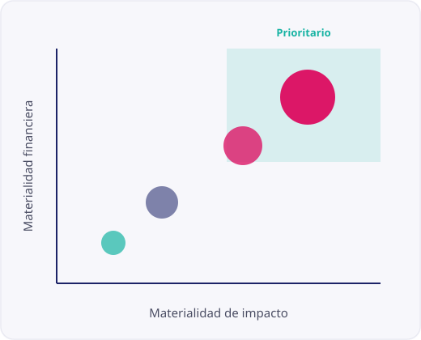

Cambio climático
Emisiones, riesgos de transición y físicos, y planes de descarbonización.
CSRD · ESRS · Sostenibilidad
Descubre qué temas ambientales, sociales y de gobernanza son realmente relevantes para tu organización —y para quienes se relacionan con ella— con un análisis riguroso, trazable y preparado para auditoría.
Por qué importa
No se puede gestionar —ni reportar— lo que no se ha priorizado. El estudio de doble materialidad define el perímetro de tu estrategia ESG y de tu informe de sostenibilidad.
Combinamos análisis documental, benchmarking sectorial y consulta a grupos de interés para separar lo accesorio de lo verdaderamente material, evaluando cada tema desde su impacto en el entorno y desde su relevancia financiera.
El resultado es una matriz de materialidad defendible, alineada con las normas ESRS, que sirve de base para el reporte CSRD y para la toma de decisiones.

Qué analizamos
Partimos del universo de temas ESRS y lo adaptamos a tu sector para no dejar fuera ningún asunto relevante ni sobredimensionar el análisis.
Emisiones, riesgos de transición y físicos, y planes de descarbonización.
Uso de materiales, agua, residuos y estrategias de circularidad.
Condiciones laborales, diversidad, salud y derechos humanos.
Ética, anticorrupción, gobierno del dato y gestión de proveedores.
Cómo trabajamos
Un método estructurado que garantiza rigor y trazabilidad de principio a fin.
Analizamos tu actividad, sector y cadena de valor para elaborar la lista de temas ESG candidatos.
Recogemos la visión de clientes, empleados, inversores y proveedores mediante encuestas y entrevistas.
Puntuamos cada tema por impacto y por relevancia financiera con umbrales definidos y justificados.
Entregamos la matriz priorizada, la documentación auditable y recomendaciones para el reporte.
Dudas habituales
Es el enfoque que evalúa un tema de sostenibilidad desde dos perspectivas: la materialidad de impacto (cómo la empresa afecta a las personas y al medioambiente) y la materialidad financiera (cómo los asuntos ESG afectan al valor de la empresa). Un tema es material si lo es en cualquiera de las dos dimensiones.
La doble materialidad es la base del reporte bajo la directiva CSRD y las normas ESRS. Si tu organización está dentro del ámbito de aplicación de la CSRD, el análisis de doble materialidad es un requisito previo obligatorio para tu informe de sostenibilidad.
Un estudio típico se completa en 6 a 10 semanas, según el tamaño de la organización, el número de grupos de interés a consultar y la disponibilidad de información interna.
Sí. Documentamos la metodología, los umbrales de materialidad, las fuentes y la trazabilidad de cada decisión para que el proceso resista una verificación externa por parte de un auditor.
Te preparamos una propuesta a medida para tu estudio de doble materialidad, con alcance, plazos y presupuesto claros.
ContáctanosSigue explorando